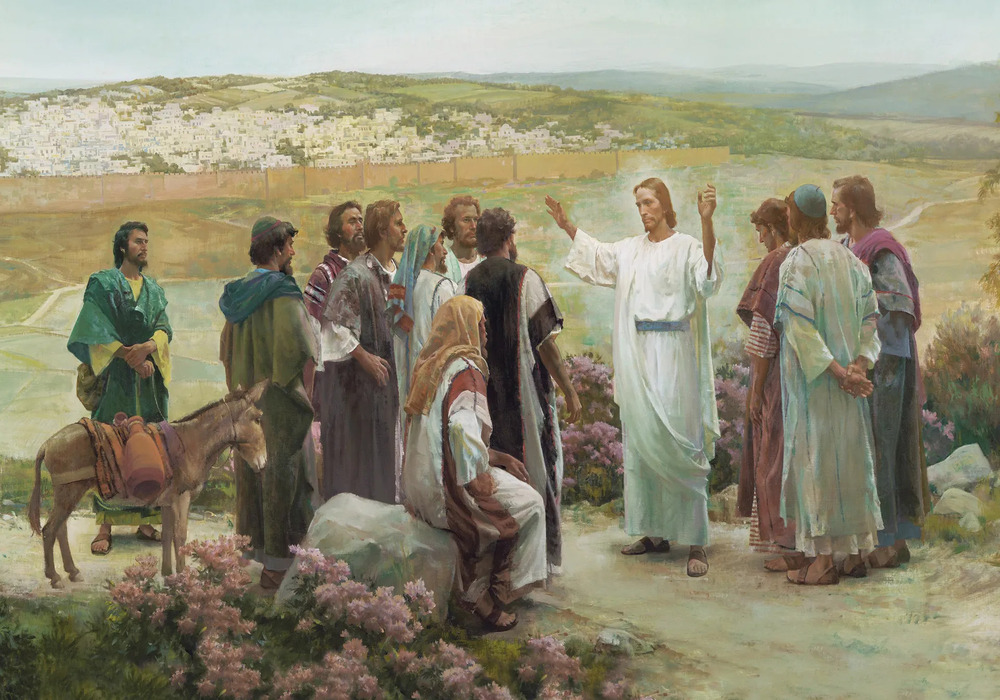

The Yeast Of The Pharisees And Sadducees
And when his disciples were come to the other side, they had forgotten to take bread.
Then Jesus said unto them, Take heed and beware of the leaven of the Pharisees and of the Sadducees.
And they reasoned among themselves, saying, It is because we have taken no bread.
Which when Jesus perceived, he said unto them, O ye of little faith, why reason ye among yourselves, because ye have brought no bread?
Do ye not yet understand, neither remember the five loaves of the five thousand, and how many baskets ye took up?
Neither the seven loaves of the four thousand, and how many baskets ye took up?
How is it that ye do not understand that I spake it not to you concerning bread, that ye should beware of the leaven of the Pharisees and of the Sadducees?
Then understood they how that he bade them not beware of the leaven of bread, but of the doctrine of the Pharisees and of the Sadducees.
Matthew 16:5-12
- 